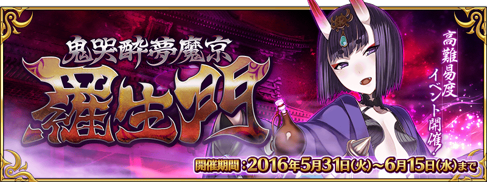
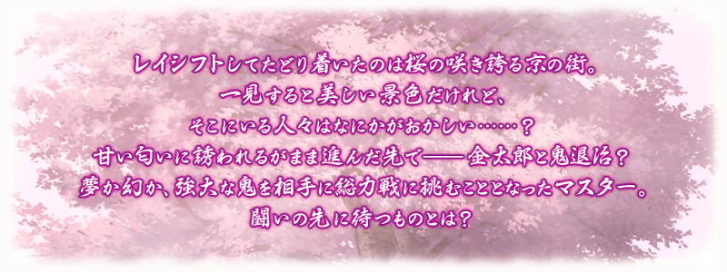
◆活動舉辦期間◆
2016年5月31日(二)4:00～6月15日(三)12:59
◆活動概要◆
舉辦期間限定・高難易度活動「鬼哭醉夢魔京 羅生門」！
以平安時代的京街為舞台推進的故事。
與坂田金時一起以茨木童子的討伐做為目標吧！
這次活動，會進行與全部的Master一起挑戰討伐茨木童子的特別關卡，鬼哭討伐戰。鬼哭討伐戰，活動期間中會發生複數次。
在鬼哭討伐戰對茨木童子進行攻擊的話，給予的傷害量會轉為傷害點數。依照獲得的傷害點數，可以拿到報酬。
還有，通過每次討伐發生的任務，也能拿到報酬。
◆活動參加條件◆
僅有通過「第五特異點 合眾為一」的Master才能參加。
※6月8日(三)12:59為止的「主線關卡AP消費1/2宣傳活動」正實施中。無論如何請藉此機會推進主線關卡，以便參加活動。
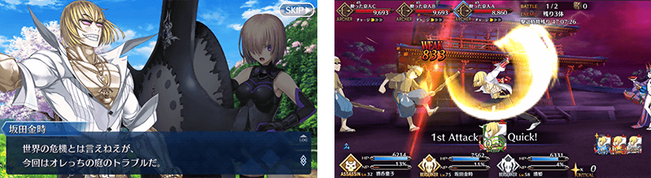

在鬼哭討伐戰中與全部的Master一同以茨木童子的討伐做為目標。
鬼哭討伐戰以「擊退戰」「追擊戰」「繼續戰」的3種類所構成，茨木童子的Total HP會根據出現的關卡而有所變化。
※在全部的關卡皆能獲得傷害點數。
※若參加活動時，茨木童子的Total HP已經變為0則「擊退戰」不會出現。
※傷害點數會在與茨木童子的戰鬥勝利時間點，或戰鬥的殘餘回合數歸0時才會加算。若戰鬥敗北傷害點數不會加算。
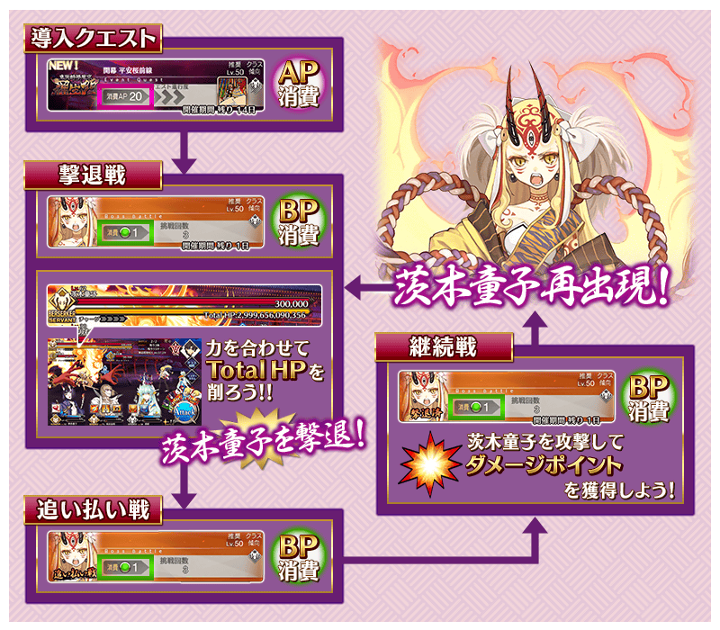※開發中畫面。
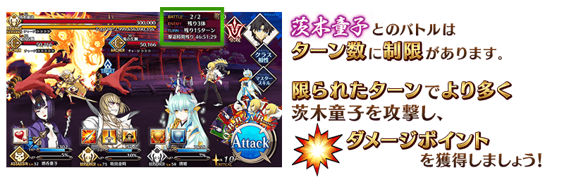
◆報酬獲得方法◆
當每次傷害點數到達一定數以上，在關卡結束時，會自動進行報酬獲得。
可以獲得的報酬名單，能從在ターミナル出現的按鈕的「活動報酬畫面」選擇「傷害點數報酬確認」做確認。
◆能以傷害點數獲得的道具◆
|
【活動限定概念禮裝】 【技能強化素材、靈基再臨素材】 【其他道具】 |
※活動專用道具｢ゴールデンおにぎり｣｢ちからのおにぎり｣活動期間結束後會消失。(6/3追記)
在鬼哭討伐戰中，滿足特定條件的能獲得報酬，並發生任務。
任務以每次茨木童子的出現的時間點區分舉辦期間，即為期間限定任務。
請注意舉辦期間結束後無法再攻略。
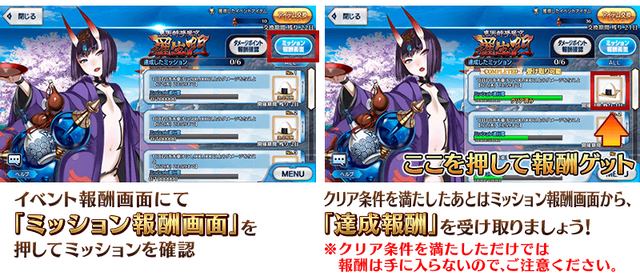
◆超值攻略方法・其1◆
裝備能以活動道具交換和傷害點數報酬入手的活動限定概念禮裝「遮那王流離譚」的話，自身在「鬼哭醉夢魔京 羅生門」的攻擊威力會提升。
另外，裝備能以傷害點數報酬入手的活動限定概念禮裝「ゴールデン捕鯉魚図」的話，我方全體＜含候補＞在「鬼哭醉夢魔京 羅生門」的攻擊威力會提升。
獲得活動限定概念禮裝，爭取更多的傷害點數吧！
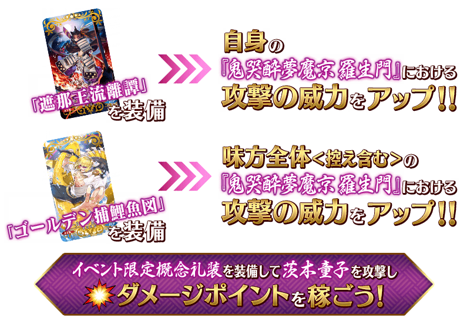
◆超值攻略方法・其2◆
裝備限期概念禮服裝的話，活動專用道具「鬼瓢簞」的獲得數會提升。
※請注意在各關卡的道具掉落率並非100%。
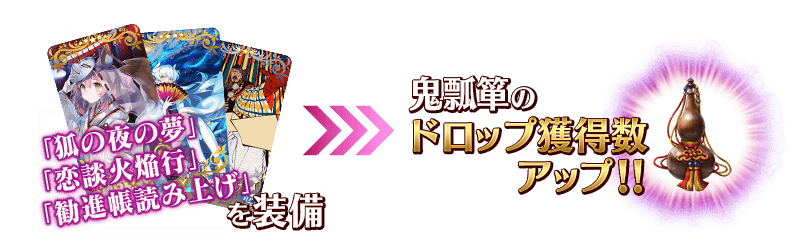
| 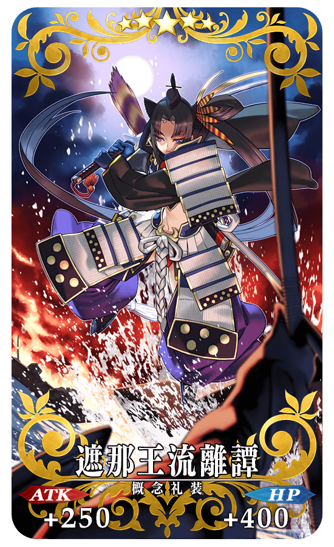 |
★★★★★SSR |
| 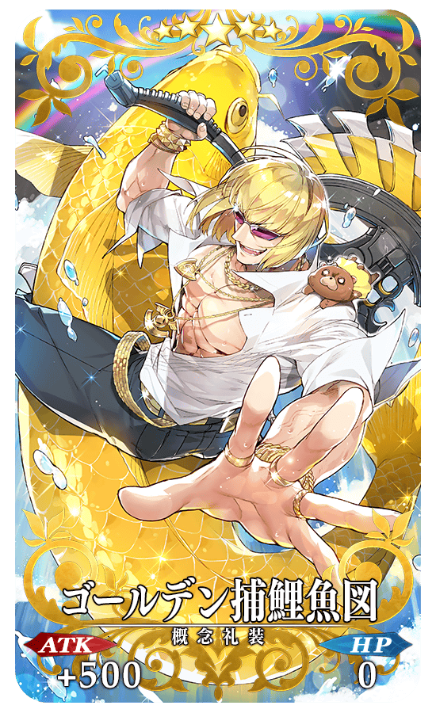 |
★★★★★SSR |
◆交換方法◆
交換期間：2016年5月31日(二)3:00～6月22日(三)12:59
※交換期間結束後「鬼瓢簞」會消失。
從達文西工房内的「活動道具交換」，用收集來的活動專用道具來交換以下的道具。
◆能用鬼瓢簞交換的道具◆
|
【活動限定概念禮裝】 【技能強化素材、靈基再臨素材】 【靈基再臨素材】 【其他道具】 |
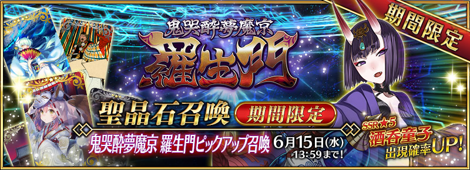
◆「鬼哭醉夢魔京 羅生門Pick Up召喚」期間◆
期間：2016年5月31日(二)3:00～6月15日(三)12:59
以期間限定舉辦「鬼哭醉夢魔京 羅生門Pick Up召喚」！
初登場的Servant「★5（SSR）酒呑童子」以期間限定登場！
詳情請在聖晶石召喚畫面左下的召喚詳細確認。
※酒呑童子在Pick Up期間結束後，不會追加到故事召喚。
裝備期間限定概念禮裝「★5(SSR)狐の夜の夢」「★4(SR)恋談火焔行」「★3(R)勧進帳読み上げ」的話會增加活動道具「鬼瓢簞」的掉落獲得數增加。
在Pick Up期間中，期間限定Servant、期間限定概念禮裝的出現機率提升！
10次召喚★4(SR)以上1張確定和★3(R)以上的Servant1位確定！
※★4(SR)以上確定包含Servant和概念禮裝。
※所謂「Servant出現機率UP」意指比同稀有度的Servant出現機率更高的設定。


| 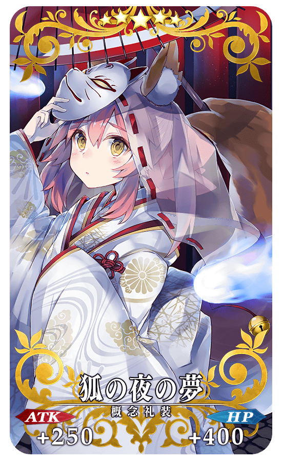 |
★★★★★SSR 狐の夜の夢 ATK 250（最大：1000） HP 400（最大：1600） 技能 自身的NP獲得量提升20%＆賦予每回合星星3個獲得狀態 ＋ 鬼瓢簞的掉落獲得數增加3個【『鬼哭醉夢魔京 羅生門』活動期間限定】 |
| 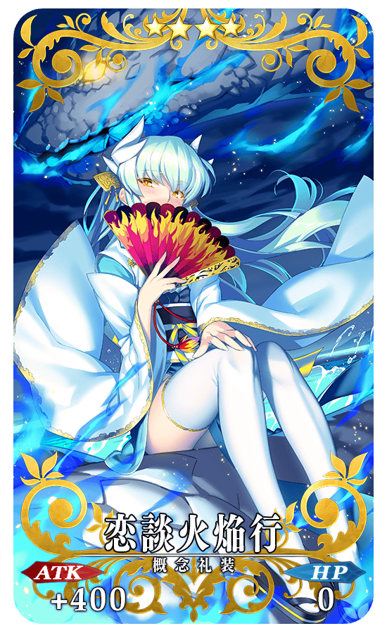 |
★★★★SR 恋談火焔行 ATK 400（最大：1500） HP 0 技能 對自身賦予〔男性〕特攻狀態25%＆弱體賦予成功率提升12% ＋ 鬼瓢簞的掉落獲得數增加2個【『鬼哭醉夢魔京 羅生門』活動期間限定】 |
| 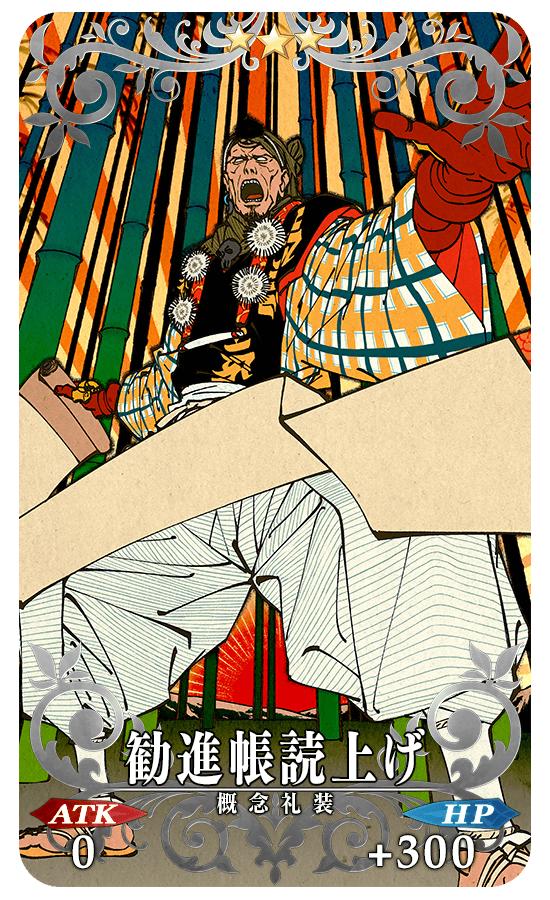 |
★★★R 勧進帳読み上げ ATK 0 HP 300（最大：1500） 技能 對自身賦予防禦弱體無效狀態1次 ＋ 鬼瓢簞的掉落獲得數增加1個【『鬼哭醉夢魔京 羅生門』活動期間限定】 |
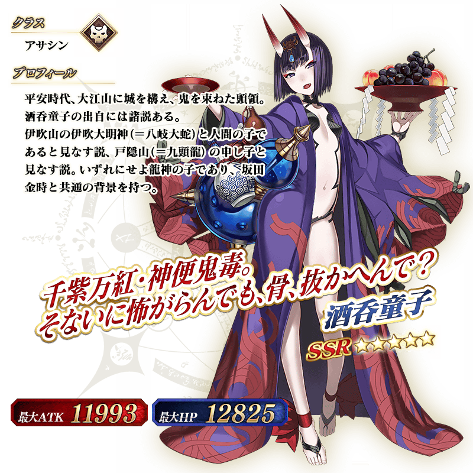